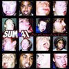

Sum 41 was formed by singer-songwriter Deryck Whibley and drummer Steve Jocz, under the name Kaspir after Whibley convinced Jocz to join his band. Jocz was a drummer in another band and Whibley was convinced that "he was the best drummer around". The duo then added Dave Baksh as lead guitarist a year later and after going through several bassists, ended up picking McCaslin to complete their lineup.
The group began as a NOFX cover band named "Kaspir". They decided to change their name for a Supernova show on September 28, 1996 which happened to be the 41st day of summer.
| Cover Art | Title | Year |
|---|---|---|
| Half Hour of Power | June 27, 2000 | |
|  | All Killer, No Filler | May 8, 2001 |
| Does This Look Infected? | November 26, 2002 | |
| Chuck | September 29, 2004 |
All information cited from Wikipedia.org